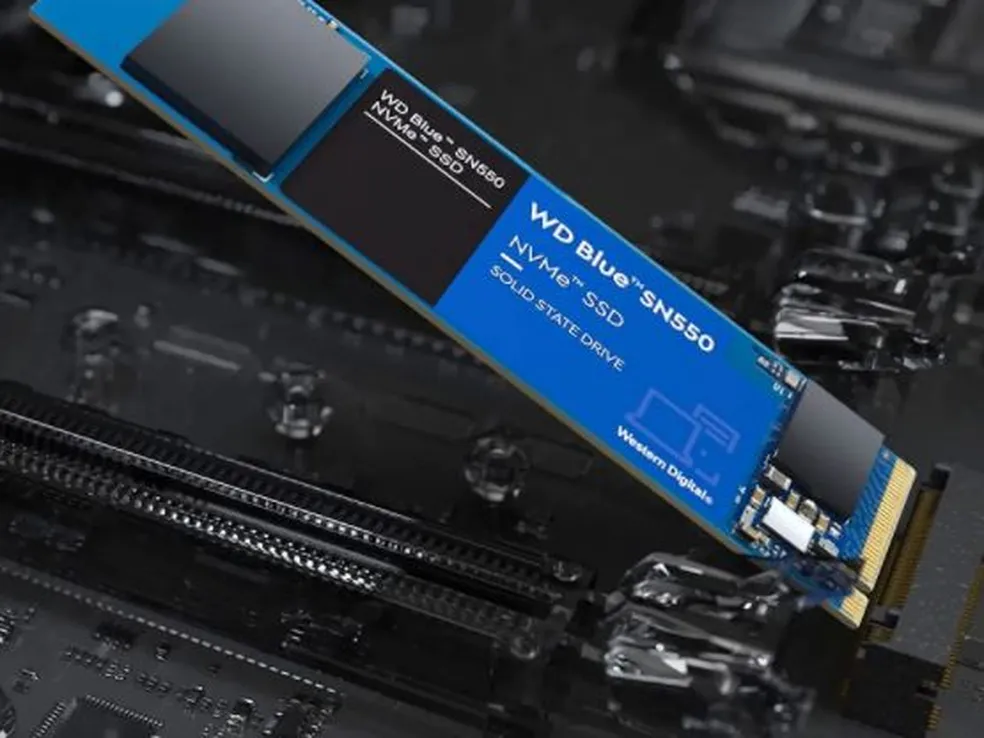

Disco Rígido (HDD - Hard Disk Drive)

O Veterano Mecânico
Funciona exatamente como um toca-discos (vitrola).
- Discos de metal girando em alta velocidade (ex: 7200 RPM).
- Uma agulha magnética lê e grava os 0s e 1s.
- Vantagem: Muito espaço por pouco dinheiro.
- Desvantagem: Lento e frágil (se cair, a agulha risca o disco e você perde tudo).
SSD (Solid State Drive)
A Revolução Silenciosa
Significa "Unidade de Estado Sólido". Não tem NENHUMA peça móvel girando lá dentro.
- Funciona com chips de memória Flash (NAND).
- Pense nele como um Pen-drive gigante e super potente.
- Vantagem: Extremamente rápido, silencioso e resistente a quedas.
- Desvantagem: Mais caro por Gigabyte que o HD.

Formatos de SSD (Form Factors)
Os SSDs evoluíram não só em velocidade, mas em formato.
SSD 2.5" (SATA)

Tem o mesmo tamanho dos HDs de notebook. Precisa de cabos de energia e de dados conectados à placa-mãe.
Mais Moderno!
SSD M.2 (NVMe)

Parece uma placa de chiclete. É parafusado DIRETO na placa-mãe. Sem cabos, sem bagunça, e absurdamente mais rápido.
As Principais Estradas
SATA
A Avenida da Cidade

- • Limite prático: ~600 MB/s.
- • Conecta HDs e SSDs formato 2.5".
- • Tecnologicamente defasado para as necessidades atuais, mas barato.
PCI Express (PCIe)
A Via Expressa (Autobahn)

- • Limite prático: Pode passar de 15.000 MB/s!
- • Conecta Placas de Vídeo (GPU) e os SSDs M.2 NVMe.
- • Trabalha com "Pistas" (Lanes) - x1, x4, x8, x16.
O Gargalo (Bottleneck)

O computador é tão rápido quanto sua peça mais lenta.
Exemplo Clássico:
Processador Core i9 de última geração + Placa de Vídeo RTX 4090 + HD mecânico velho.
O jogo vai demorar 5 minutos para carregar porque o HD não consegue entregar os dados na velocidade que a CPU e a GPU pedem.